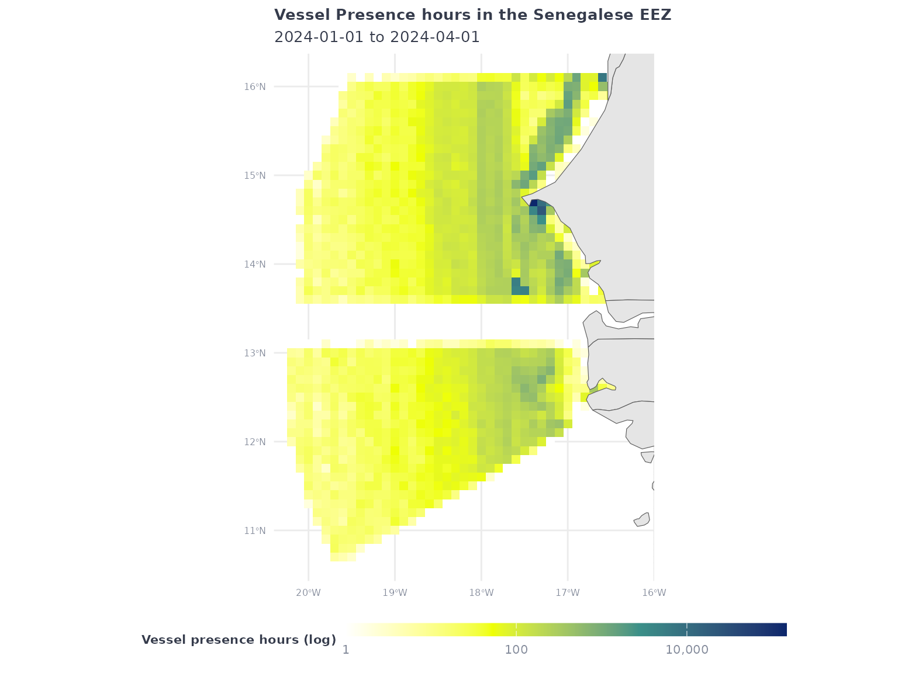
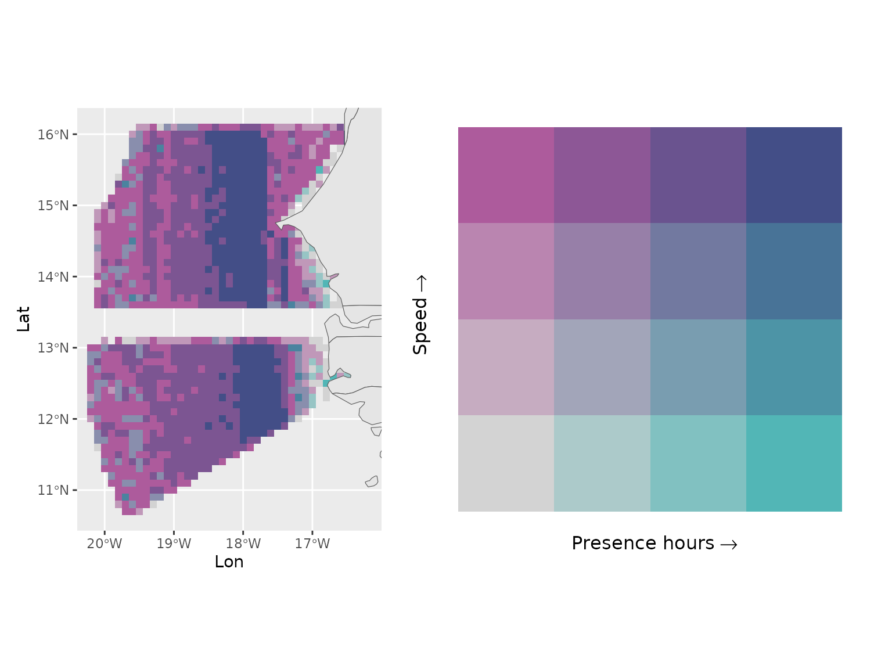
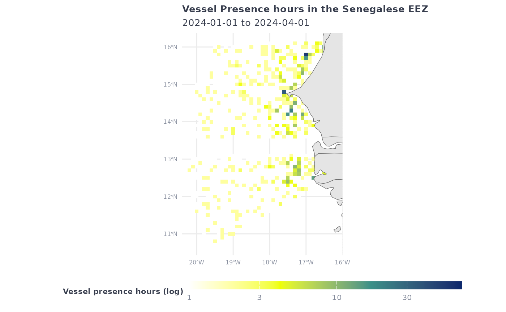
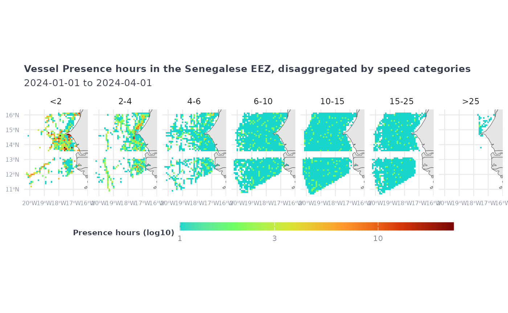
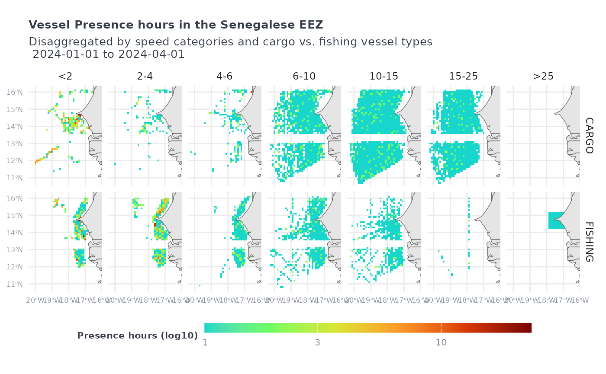

Exploring the vessel presence layer in `gfwr`
Source:vignettes/articles/gfw_vessel_presence.Rmd
gfw_vessel_presence.RmdOverview
The gfw_ais_presence() function provides gridded vessel
presence data from Global Fishing Watch’s 4Wings
Map Visualization API. Global Fishing Watch’s vessel presence layer
includes all vessel types, fishing or not, and summarizes their presence
in hours, based on the data transmitted by their AIS transponders.
In this vignette we will explore several ways to call this function, and the filters that have been implemented in our APIs to support the exploration of this layer.
Setup
To get started, first load the gfwr package and some of
the packages we will use
#> ℹ Loading gfwr
library(dplyr)
library(tidyr)
library(ggplot2)
library(rnaturalearth)
library(rnaturalearthdata)
library(glue)We will fetch data for January-March 2024. Remember the date
intervals in gfwr include the start of the interval and
exclude the last date of the interval:
start_date <- '2024-01-01' # will be included
end_date <- '2024-04-01' # will be excluded. search will be up to 2024-03-31Handling pre-built regions: MPAs, RFMOs, and EEZs
gfw_ais_presence() was designed to provide data for a
specific region, offering users the ability to select from multiple
built-in region types by specifying a specific Exclusive Economic Zone
(EEZ), Marine Protected Area (MPA), or Regional Fisheries Management
Organization (RFMO).
Note: The use of a region is mandatory, as the API is not designed to handle global requests
The list of available regions for each type, and their
label and id, can be accessed with the
gfw_regions() function.
eez_regions <- gfw_regions(region_source = 'EEZ')
eez_regions
#> # A tibble: 285 × 5
#> iso label id GEONAME POL_TYPE
#> <chr> <chr> <dbl> <chr> <chr>
#> 1 ASM American Samoa 8444 United States Exclusive Eco… 200NM
#> 2 SHN Ascension 8379 British Exclusive Economic … 200NM
#> 3 COK Cook Islands 8446 New Zealand Exclusive Econo… 200NM
#> 4 FLK Falkland / Malvinas Islands 8389 Overlapping claim Falkland … Overlap…
#> 5 PYF French Polynesia 8440 French Exclusive Economic Z… 200NM
#> 6 PCN Pitcairn 8439 British Exclusive Economic … 200NM
#> 7 SHN Saint Helena 8380 British Exclusive Economic … 200NM
#> 8 WSM Samoa 8445 Samoan Exclusive Economic Z… 200NM
#> 9 TON Tonga 8448 Tongan Exclusive Economic Z… 200NM
#> 10 SHN Tristan da Cunha 8382 British Exclusive Economic … 200NM
#> # ℹ 275 more rowsgfwr also includes the gfw_region_id()
function to get the label and id for a
specific region using the region argument. For EEZs,
region corresponds to the name or the country or the ISO3
code. Note that, for some countries, the name will return multiple
regions. For RFMOs, region corresponds to the RFMO
abbreviation (e.g. "ICCAT") and for MPAs it refers to the
name of the MPA.
To fetch the numeric code of the Senegal EEZ, let’s use
gfw_region_id()
# Use gfw_region_id function to get EEZ code for Senegal
senegal_eez_code <- gfw_region_id(region = "Senegal", region_source = "EEZ")
senegal_eez_code
#> # A tibble: 2 × 5
#> iso3 label id GEONAME POL_TYPE
#> <chr> <chr> <dbl> <chr> <chr>
#> 1 NA Joint regime area: Senegal / Guinea-Bissau 48964 Joint regime … Joint r…
#> 2 SEN Senegal 8371 Senegalese Ex… 200NMThe results show the EEZ and a Joint regime area. We will pick the
EEZ code, 8371.
Calling the function
The gfw_ais_presence() function allows users to specify
multiple criteria to customize the data they download, including the
date range, spatial and temporal resolution, and grouping variables. See
the documentation for gfw_ais_presence() or the GFW
APIs for more info about these parameter options.
Spatial resolution can be LOW = 0.1 degree or HIGH = 0.01 degree,
vp_senegal <- gfw_ais_presence(spatial_resolution = "LOW",
temporal_resolution = "MONTHLY",
start_date = start_date,
end_date = end_date,
region_source = "EEZ",
region = 8371)
vp_senegal
#> # A tibble: 4,177 × 5
#> Lat Lon `Time Range` `Vessel IDs` `Vessel Presence Hours`
#> <dbl> <dbl> <chr> <dbl> <dbl>
#> 1 12.6 -19.8 2024-01 4 6
#> 2 14.8 -20.1 2024-02 1 1
#> 3 12.2 -19 2024-03 11 13
#> 4 12.5 -19.3 2024-02 6 6
#> 5 12.8 -20.2 2024-01 1 1
#> 6 12.4 -18.6 2024-01 16 17
#> 7 14.3 -17.9 2024-02 77 84
#> 8 14.4 -18.7 2024-02 11 11
#> 9 15.3 -18.3 2024-02 34 42
#> 10 10.8 -19.6 2024-03 6 6
#> # ℹ 4,167 more rowsWithout grouping variables, the function will return a number of
vessel IDs present (for a definition of
Vessel ID see our vessel
identity vignette) and the total vessel presence hours for each cell
(lat, lon).
The Time Range column will be expressed in the temporal
units of the temporal resolution selected. In this example,
MONTHLY will create a Time Range expressed in months:
YYYY-MM
Explore other temporal resolution and how the results vary.
vp_senegal <- gfw_ais_presence(spatial_resolution = "LOW",
temporal_resolution = "YEARLY",
start_date = start_date,
end_date = end_date,
region_source = "EEZ",
region = 8371)
vp_senegal
#> # A tibble: 1,444 × 5
#> Lat Lon `Time Range` `Vessel IDs` `Vessel Presence Hours`
#> <dbl> <dbl> <dbl> <dbl> <dbl>
#> 1 13.8 -17.6 2024 24 5299
#> 2 15.3 -17.6 2024 56 82
#> 3 16 -16.7 2024 16 52
#> 4 15.8 -18.2 2024 106 115
#> 5 10.7 -19.6 2024 5 5
#> 6 16.1 -18.3 2024 22 22
#> 7 11.2 -19.5 2024 14 16
#> 8 14.6 -18.9 2024 29 34
#> 9 11.6 -18.6 2024 39 44
#> 10 12 -17.9 2024 114 141
#> # ℹ 1,434 more rowsGrouping variables
The outputs of gfw_ais_presence() can be grouped by
FLAG, GEARTYPE, FLAGANDGEARTYPE,
MMSI or VESSEL_ID. This will create extra
grouping columns, and the number of vessel presence hours will be
expressed accordingly.
vp_senegal_flag <- gfw_ais_presence(spatial_resolution = "LOW",
temporal_resolution = "MONTHLY",
group_by = "FLAG",
start_date = start_date,
end_date = end_date,
region_source = "EEZ",
region = 8371)
vp_senegal_flag |> count(flag) |> arrange((desc(n)))
#> # A tibble: 84 × 2
#> flag n
#> <chr> <int>
#> 1 LBR 2937
#> 2 MHL 2912
#> 3 PAN 2632
#> 4 MLT 2053
#> 5 SGP 1895
#> 6 BHS 1686
#> 7 HKG 1619
#> 8 ATG 1287
#> 9 NOR 1273
#> 10 PRT 1257
#> # ℹ 74 more rowsNote that these results are grouped by
Vessel ID, which is not the same as grouping by number of
vessels. Check our vessel
identity vignette for more information.
Grouping by MMSI will group the results at the MMSI scale, which can correspond to individual vessels, but this is not always the case.
vp_senegal_MMSI <- gfw_ais_presence(spatial_resolution = "LOW",
temporal_resolution = "MONTHLY",
group_by = "MMSI",
start_date = start_date,
end_date = end_date,
region_source = "EEZ",
region = 8371)
vp_senegal_MMSI
#> # A tibble: 79,730 × 7
#> Lat Lon `Time Range` mmsi `Entry Timestamp` `Exit Timestamp`
#> <dbl> <dbl> <chr> <dbl> <dttm> <dttm>
#> 1 14.1 -17.3 2024-02 663092000 2024-02-01 08:00:00 2024-02-13 03:00:00
#> 2 15.1 -18.6 2024-02 219495000 2024-02-06 17:00:00 2024-02-07 12:00:00
#> 3 15.8 -17.9 2024-03 636017895 2024-03-24 20:00:00 2024-03-25 17:00:00
#> 4 14.4 -18.1 2024-01 248906000 2024-01-15 16:00:00 2024-01-16 06:00:00
#> 5 13.6 -17.9 2024-03 548691000 2024-02-15 11:00:00 2024-03-19 22:00:00
#> 6 12.6 -18.8 2024-02 247212660 2024-02-06 10:00:00 2024-02-07 12:00:00
#> 7 14.4 -17.8 2024-01 241031000 2024-01-08 05:00:00 2024-01-09 00:00:00
#> 8 11.8 -17.8 2024-02 538003349 2024-02-11 19:00:00 2024-03-04 17:00:00
#> 9 13.8 -17.7 2024-03 636015035 2024-03-23 09:00:00 2024-03-24 09:00:00
#> 10 12 -17.7 2024-01 477282900 2024-01-10 05:00:00 2024-03-26 18:00:00
#> # ℹ 79,720 more rows
#> # ℹ 1 more variable: `Vessel Presence Hours` <dbl>Finally, grouping by Vessel ID not only returns the
Vessel IDs of the active vessels in the area, it also
returns all the identity details about the vessels. Knowing this can
help a lot in workflows that need detailed information about vessel
identity, gears, and characteristics.
vp_senegal_vesselID <- gfw_ais_presence(spatial_resolution = "LOW",
temporal_resolution = "MONTHLY",
group_by = "VESSEL_ID",
start_date = start_date,
end_date = end_date,
region_source = "EEZ",
region = 8371)
vp_senegal_vesselID
#> # A tibble: 79,748 × 16
#> Lat Lon `Time Range` `Vessel ID` Flag `Vessel Name` `Entry Timestamp`
#> <dbl> <dbl> <chr> <chr> <chr> <chr> <dttm>
#> 1 13 -17.7 2024-02 8554d35e1-1… LBR MSC VENICE 2024-01-21 08:00:00
#> 2 11.4 -19.5 2024-01 81ca5732d-d… PAN PARAGON 2024-01-16 14:00:00
#> 3 12.2 -17.1 2024-03 364511e7e-e… CHN TIANG EI HU 2024-01-04 17:00:00
#> 4 16.1 -17.7 2024-02 4d2a03fea-a… THA ROJAREK NAREE 2024-02-04 09:00:00
#> 5 13 -20.2 2024-03 6ba5c0fe2-2… SGP EAGLE VERACR… 2024-03-20 07:00:00
#> 6 14 -19.2 2024-01 45438c054-4… BHS SONANGOL ETO… 2024-01-05 18:00:00
#> 7 14.6 -17.6 2024-02 d605e8598-8… PAN MSC DYMPHNA 2024-01-07 09:00:00
#> 8 13.9 -19.8 2024-02 bd6e9d24c-c… SGP BULK PENINSU… 2024-02-03 16:00:00
#> 9 12.1 -17.5 2024-01 e4e2f7187-7… SGP FAIRCHEM INT… 2024-01-17 14:00:00
#> 10 12.6 -17.8 2024-03 cac43d123-3… HKG COSCO KUNLUN… 2024-03-28 07:00:00
#> # ℹ 79,738 more rows
#> # ℹ 9 more variables: `Exit Timestamp` <dttm>, `Gear Type` <chr>,
#> # `Vessel Type` <chr>, MMSI <dbl>, IMO <dbl>, CallSign <chr>,
#> # `First Transmission Date` <dttm>, `Last Transmission Date` <dttm>,
#> # `Vessel Presence Hours` <dbl>The columns include Lat, Lon, Time Range, Vessel ID, Flag, Vessel Name, Entry Timestamp, Exit Timestamp, Gear Type, Vessel Type, MMSI, IMO, CallSign, First Transmission Date, Last Transmission Date, Vessel Presence Hours.
vp_senegal_vesselID |> count(`Gear Type`)
#> # A tibble: 18 × 2
#> `Gear Type` n
#> <chr> <int>
#> 1 BUNKER 282
#> 2 CARGO 40061
#> 3 CARRIER 2040
#> 4 DRIFTING_LONGLINES 346
#> 5 FISHING 443
#> 6 GEAR 27
#> 7 INCONCLUSIVE 388
#> 8 OTHER 27868
#> 9 OTHER_PURSE_SEINES 82
#> 10 PASSENGER 1341
#> 11 POLE_AND_LINE 16
#> 12 PURSE_SEINES 34
#> 13 PURSE_SEINE_SUPPORT 26
#> 14 SEISMIC_VESSEL 403
#> 15 SET_LONGLINES 46
#> 16 TRAWLERS 5835
#> 17 TUNA_PURSE_SEINES 393
#> 18 NA 117
vp_senegal_vesselID |> count(`Vessel Type`)
#> # A tibble: 10 × 2
#> `Vessel Type` n
#> <chr> <int>
#> 1 BUNKER 282
#> 2 CARGO 40074
#> 3 CARRIER 2040
#> 4 FISHING 7610
#> 5 GEAR 31
#> 6 OTHER 27817
#> 7 PASSENGER 1348
#> 8 SEISMIC_VESSEL 403
#> 9 SUPPORT 26
#> 10 NA 117Mapping vessel presence with ggplot2
Before mapping let’s define a theme using ggplot2
# Map theme with dark background
map_theme <- ggplot2::theme_minimal() +
ggplot2::theme(
panel.border = element_blank(),
legend.position = "bottom", legend.box = "vertical",
legend.key.height = unit(3, "mm"),
legend.key.width = unit(20, "mm"),
legend.text = element_text(color = "#848b9b", size = 8),
legend.title = element_text(face = "bold", color = "#363c4c", size = 8, hjust = 0.5),
plot.title = element_text(face = "bold", color = "#363c4c", size = 10),
plot.subtitle = element_text(color = "#363c4c", size = 10),
axis.title = element_blank(),
axis.text = element_text(color = "#848b9b", size = 6)
)
# Palette for fishing activity
map_effort_light <- c("#ffffff", "#eeff00", "#3b9088","#0c276c")And let’s map the original vessel presence dataset for January-March 2024:
vp_senegal
#> # A tibble: 1,444 × 5
#> Lat Lon `Time Range` `Vessel IDs` `Vessel Presence Hours`
#> <dbl> <dbl> <dbl> <dbl> <dbl>
#> 1 13.8 -17.6 2024 24 5299
#> 2 15.3 -17.6 2024 56 82
#> 3 16 -16.7 2024 16 52
#> 4 15.8 -18.2 2024 106 115
#> 5 10.7 -19.6 2024 5 5
#> 6 16.1 -18.3 2024 22 22
#> 7 11.2 -19.5 2024 14 16
#> 8 14.6 -18.9 2024 29 34
#> 9 11.6 -18.6 2024 39 44
#> 10 12 -17.9 2024 114 141
#> # ℹ 1,434 more rowsWe can use ggplot2 and geom_tile to plot
the data.
vp_senegal |>
ggplot() +
geom_tile(aes(x = Lon,
y = Lat,
fill = `Vessel Presence Hours`)) +
geom_sf(data = ne_countries(returnclass = "sf", scale = "medium")) +
coord_sf(xlim = c(min(vp_senegal$Lon), max(vp_senegal$Lon)),
ylim = c(min(vp_senegal$Lat), max(vp_senegal$Lat))) +
scale_fill_gradientn(
trans = 'log10',
colors = map_effort_light,
na.value = NA,
labels = scales::comma) +
labs(title = "Vessel Presence hours in the Senegalese EEZ",
subtitle = glue("{start_date} to {end_date}"),
fill = "Vessel presence hours (log)") +
map_theme
Using the speed filter
gfw_ais_vessel_presence() supports filtering the vessels
by speed range (in knots) in the following categories :
- <2 – Less than 2 knots
- 2-4 – 2 to 4 knots
- 4-6 – 4 to 6 knots
- 6-10 – 6 to 10 knots
- 10-15 – 10 to 15 knots
- 15-25 – 15 to 25 knots
- >25 – Greater than 25 knots
The filter syntax is adding the category:
filter_by = "speed = '<2'"
Using the filter will subset the activity raster to the activity that happened in the speed range:
eez_vessel_presence_speed <- gfw_ais_presence(
spatial_resolution = "LOW",
temporal_resolution = "MONTHLY",
group_by = "FLAG",
filter_by = "speed = '6-10'",
start_date = start_date,
end_date = end_date,
region = 8371,
region_source = "EEZ"
)
eez_vessel_presence_speed
#> # A tibble: 9,403 × 6
#> Lat Lon `Time Range` flag `Vessel IDs` `Vessel Presence Hours`
#> <dbl> <dbl> <chr> <chr> <dbl> <dbl>
#> 1 14.3 -18.8 2024-02 HKG 1 1
#> 2 15.1 -17.9 2024-01 MHL 1 1
#> 3 15.3 -17.8 2024-03 LVA 1 2
#> 4 14.8 -18.5 2024-03 MHL 1 1
#> 5 15 -18.4 2024-02 DEU 1 1
#> 6 15.1 -18.1 2024-01 LBR 1 2
#> 7 12.8 -17.3 2024-03 GNB 1 2
#> 8 15.3 -18.7 2024-03 VUT 1 1
#> 9 14.2 -16.3 2024-03 SLE 1 1
#> 10 15.7 -17.7 2024-03 LBR 1 1
#> # ℹ 9,393 more rows*Note: The output won’t have an indication of the speed filter that was used, so a recommendation is to add a column
speedto the output before merging with other speed bins. This is also a reason why using logical clauses likefilter_by = "speed = '6-10' AND speed = '10-15'"is not very useful if you want to be able to keep the bins apart.
The speed filter will be a subset of the overall vessel presence

Retrieving multiple speed classes
To retrieve data binned in multiple (or all) speed classes, we can loop across the desired speed categories:
speed_categories <- as.factor(c("<2",
"2-4",
"4-6",
"6-10",
"10-15",
"15-25",
">25"
))
# we create the filters for each
sp <- paste0("speed ='" , speed_categories, "'")
vp_all_speeds <- purrr::map(sp,
~gfw_ais_presence(
spatial_resolution = "LOW",
temporal_resolution = "DAILY",
group_by = "VESSEL_ID",
filter_by = .x,
start_date = start_date,
end_date = end_date,
region = 8371,
region_source = "EEZ"
))
# adding a speed column to help aggregate the data
vp_all_speeds <- purrr::map2(vp_all_speeds,
speed_categories,
~mutate(.x, speed = .y)) |>
bind_rows()
# reorganizing factor levels
vp_all_speeds <- vp_all_speeds |>
mutate(speed = as.factor(speed)) |>
mutate(speed = forcats::fct_relevel(speed, c("<2",
"2-4",
"4-6",
"6-10",
"10-15",
"15-25",
">25"
)))
vp_all_speeds |>
ggplot() +
geom_tile(aes(x = Lon,
y = Lat,
fill = `Vessel Presence Hours`)) +
geom_sf(data = ne_countries(returnclass = "sf", scale = "medium")) +
coord_sf(xlim = c(min(eez_vessel_presence_speed$Lon),max(eez_vessel_presence_speed$Lon)),
ylim = c(min(eez_vessel_presence_speed$Lat),max(eez_vessel_presence_speed$Lat))) +
scale_fill_gradientn(
trans = 'log10',
colors = viridis::turbo(6, begin = 0.3),
na.value = NA,
labels = scales::comma) +
facet_grid(~speed) +
labs(title = "Vessel Presence hours in the Senegalese EEZ, disaggregated by speed categories",
subtitle = glue("{start_date} to {end_date}"),
fill = "Presence hours (log10)") +
map_theme
Since the request retrieved the data grouped by
vessel ID, we have gear types, vessel types and other
identity markers that can help filter and refine the visualization.
vp_all_speeds |>
filter(`Vessel Type` %in% c("FISHING", "CARGO")) |>
ggplot() +
geom_tile(aes(x = Lon,
y = Lat,
fill = `Vessel Presence Hours`)) +
geom_sf(data = ne_countries(returnclass = "sf", scale = "medium")) +
coord_sf(xlim = c(min(eez_vessel_presence_speed$Lon),max(eez_vessel_presence_speed$Lon)),
ylim = c(min(eez_vessel_presence_speed$Lat),max(eez_vessel_presence_speed$Lat))) +
scale_fill_gradientn(
trans = 'log10',
colors = viridis::turbo(6, begin = 0.3),
na.value = NA,
labels = scales::comma) +
facet_grid(`Vessel Type`~speed) +
labs(title = "Vessel Presence hours in the Senegalese EEZ",
subtitle = paste("Disaggregated by speed categories and cargo vs. fishing vessel types \n", glue("{start_date} to {end_date}")),
fill = "Presence hours (log10)") +
map_theme